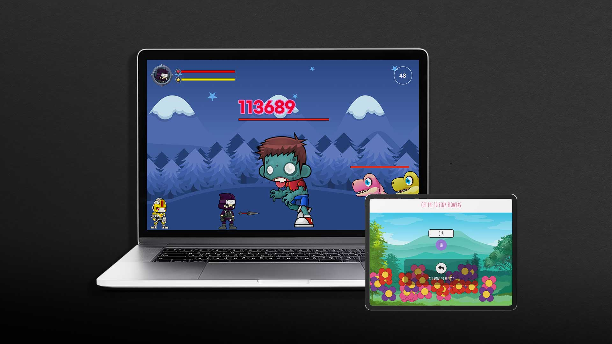

JS Mini-Games
Jan 2023
Desktop/Tablet compatible
3D Game Leaflet
Overview
I am very interested in interactive design. I wanted to make this JS game section of my website with a creative interactive UI. I was inspired by Squid Game, so the overall design is dark, with the famous circle, triangle, and square business card as a leaflet.From this project, I learned the importance of having sufficient knowledge for each device before developing an interactive UI. Unfortunately, it is currently not possible to see if the user is browsing through a mobile device or a small tablet, but it is possible to check if they have a device with a screen size of 1024p or more. In the future, I plan to develop it as a leaflet that opens vertically so that it can respond to smaller devices. (It is really difficult to develop interactive designs for all screen sizes🥺)
How to interact
If you play the Squid Game background music on the bottom left and look at the content, you will feel more immersed. When you click with the mouse, the leaflet opens one by one. And when you click on the corresponding page, it expands to a flat surface and zooms in. The rest of the page was made less visible by adjusting opacity so that your focus is on the center of the page. To go back, press the BACK button on the top and press the close button to return to the first folded state. In the middle of the leaflet, there is a form to enter an email address in order to receive new game updates. I can check it in real time after you submit it successfully. VScode HTML CSS Javascript
Oct 2022
Desktop/Tablet compatible
Killing Monster
Overview
Killing Monsters is a JavaScript mini-game that I made using arrays, objects, and for loops.This game focuses on user interaction by implementing various situations such as various motions of the character based on the keyboard key codes, leveling up, collisions with the monsters, conversations with the NPCs, and quest rewards.
How to play
The timer starts when the game starts and you have to hunt down all the monsters that appear randomly in each stage.If you clear the NPC's mission in the middle of the game, you will then be able to fight the Zombie King.
The key to this game is how fast you are at using the keyboard controls and defeating all the monsters.
If you finish the game within 50 seconds, you are in the top 1%. VScode HTML CSS Javascript
Aug 2022
Responsive
Pink Flower Garden
-

[Before performance improvement]
Original version -
[After performance improvement]
Refactored version
Overview
This is a JavaScript mini-game made with browser DOM elements and APIs.The goal was to create a working game with DOM elements,
but also one that performs well in the browser with modular JS and classes.
I constantly dwelled on how to improve performance, continually coming back to the project and refactoring.
How to play
You win when you click 10 pink flowers within 5 seconds.You lose when the time is over or click any other flowers. VScode HTML CSS Javascript